Ph.D. Thesis Defense

Abstract
My thesis defense at the Faculty of Engineering, Chulalongkorn University. This dissertation introduces a new architecture for remote sensing, featuring Global Convolutional Network (GCN), channel attention, domain-specific transfer learning, Feature Fusion (FF), and Depthwise Atrous Convolution (DA). Tests on Landsat-8 and ISPRS Vaihingen datasets show that this model significantly outperforms the baseline.
🎓 Ph.D. Dissertation Defense – Triumphant
On July 9, 2020, I successfully defended my Ph.D. dissertation titled “Semantic Segmentation on Remotely Sensed Images Using Deep Convolutional Encoder-Decoder Neural Network” before a distinguished committee of Thai professors, each of whom earned their doctoral degrees from world-renowned international universities.
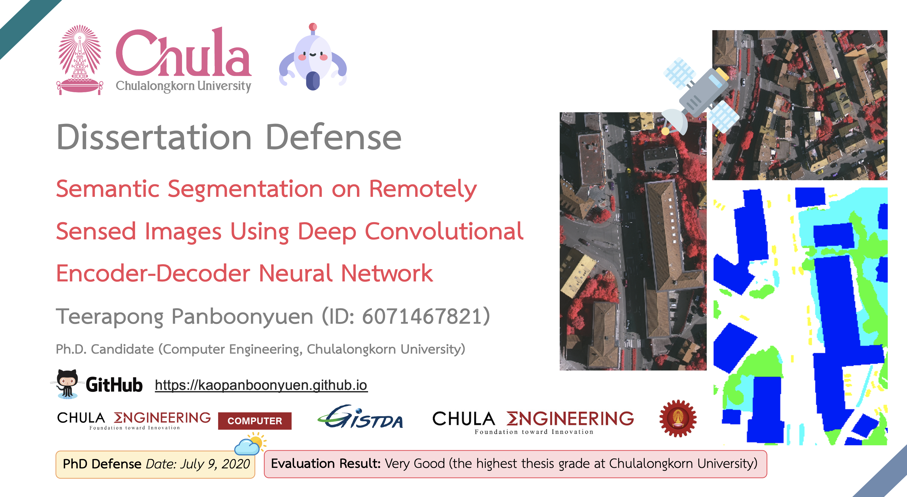
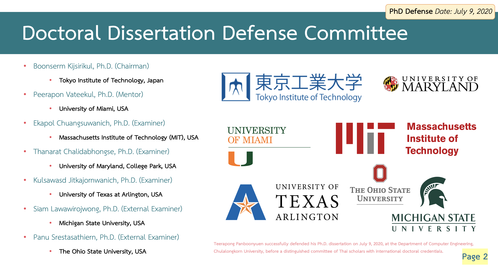
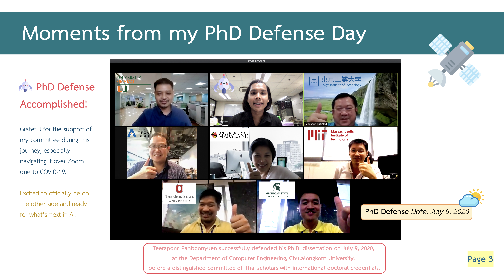
🔗 Check out my full presentation slides here: 👉 Ph.D. Defense Slides
This moment was a culmination of years of hard work and dedication, made even more meaningful by the opportunity to present my research to such respected scholars. Their insightful feedback and support reinforced the importance of collaboration and intellectual exchange in pushing the boundaries of knowledge and technology.
🎓 PhD Journey Overview
Ph.D. Thesis · Chulalongkorn University · 2020
FusionNetGeoLabel — Semantic Segmentation on Remotely Sensed Images Using Deep Convolutional Encoder–Decoder Neural Networks
👨🎓 Teerapong Panboonyuen
| 📌 Resource | 🔗 Link | 🧠 Description |
|---|---|---|
| 📖 PhD Story Blog | Journey Story | Personal journey, motivation, and behind-the-scenes PhD experience |
| 💻 Code Repository | FusionNetGeoLabel | Full implementation of the FusionNetGeoLabel framework |
| 🌐 Project Page | Live Project | Interactive project overview, results, and visual demonstrations |
| 📊 Defense Slides | PhD Slides | Official PhD defense presentation slides |
| 🗣️ Defense Blog | Talk Summary | Narrative summary of the PhD defense presentation |
| 📚 Thesis PDF | Full Thesis | Official doctoral dissertation (Chulalongkorn University) |
🚀 Key Highlights
- 🧠 End-to-end deep learning research pipeline (idea → model → thesis)
- 🛰️ Semantic segmentation for high-resolution remote sensing imagery
- 🔗 Fusion-based architecture with multi-scale feature learning
- 🌍 Real-world geospatial AI applications (urban, environment, mapping)
- 💻 Fully open-source and reproducible research implementation
- 🏆 Strong integration of theory, engineering, and experimental validation
“Geospatial AI is more than teaching machines to see the Earth—it is about teaching them to understand it. My PhD journey began with pixels and maps, but it evolved into a deeper mission: turning remote sensing data into meaningful knowledge for real-world impact. From uncertainty in research to clarity in contribution, every step shaped not only a model, but a mindset. To the next generation of researchers: don’t just follow the landscape—learn to reshape it.”
The list below shows the names of those who submitted their final Ph.D. dissertations, and as part of the class of 2017 (student ID: 6071467821), I am proud to highlight that I completed my Ph.D. in Artificial Intelligence in just two and a half years, graduating in 2019.
This achievement is a testament to my dedication, relentless work ethic, and passion for the field. It was a journey that demanded focus, time management, and the ability to push the boundaries of what was possible within an accelerated timeline.
I am immensely proud of the way I tackled this challenge, which not only sharpened my technical skills but also refined my communication and problem-solving abilities.
Reflecting on this journey, I am deeply grateful for the unwavering commitment I gave to my work. Completing my Ph.D. in such a short time was no easy feat, but it taught me invaluable lessons in resilience, focus, and perseverance. This experience has prepared me to take on complex challenges and contribute meaningfully to the ever-evolving field of AI.
🧠 The research focused on applying deep learning techniques—specifically convolutional encoder-decoder architectures—for high-accuracy semantic segmentation in remotely sensed imagery, pushing the boundaries of geospatial AI.
🔗 Explore the full dissertation, source code, and project resources here:
👉 https://kaopanboonyuen.github.io/FusionNetGeoLabel/
🔗 Interested in the full presentation slides? You can view them here:
👉 Ph.D. Defense Slides
🎓 Official Recognition of Ph.D. Completion
On January 15, 2021, I officially graduated with the degree of Doctor of Philosophy in Computer Engineering from Chulalongkorn University (Student ID: 6071467821). This milestone was formally endorsed by the University Council on January 28, 2021, marking the successful culmination of years of research, dedication, and perseverance. This recognition stands as undeniable proof of my academic journey, where relentless effort and focus enabled me to complete my Ph.D. in an accelerated timeframe while upholding the highest standards of research excellence.
👑 Commencement Ceremony Invitation
On May 19, 2022, I was honored to attend the Royal Commencement Ceremony at Chulalongkorn University, where I received my Ph.D. degree in person as part of the official convocation. Assigned seat number 12 in the Faculty of Engineering (Doctoral Degree), this moment represented the final chapter of a journey defined by resilience, discipline, and an unwavering pursuit of knowledge. Walking across the stage in the royal hall was not just a celebration of personal achievement, but also a tribute to the countless hours of hard work and dedication that shaped me into the scholar and professional I am today.
🌟 A Journey of Perseverance and Pride
Looking back on this journey, I feel an overwhelming sense of pride in myself for making it through. It was a path filled with both excitement and exhaustion—endless nights of research, the anxiety of waiting on paper decisions and wondering if they would be rejected, the challenge of pushing through Q1–Tier 1 journals, and the pressure of the thesis defense. Yet, each hurdle became a stepping stone, and in the end, I emerged stronger, wiser, and more resilient.
This achievement is more than just a degree—it is proof that I can overcome even the toughest battles.
I am truly grateful to myself, because at the core of it all, it was my own persistence and determination that carried me through. Life goes on, and I walk forward with confidence, knowing that I did this—and only I could.
After successfully defending my Ph.D. in Artificial Intelligence, I gained a deep and comprehensive understanding of advanced AI methodologies, particularly in the areas of computer vision, deep learning, and semantic segmentation.
My research on “Semantic Segmentation on Remotely Sensed Images Using Deep Convolutional Encoder-Decoder Neural Networks” has not only enhanced my technical expertise but also refined my ability to tackle complex, real-world problems with innovative solutions.
The experience of defending my dissertation to a panel of esteemed experts further strengthened my communication and collaboration skills, allowing me to explain intricate concepts clearly while receiving valuable feedback.
This journey has instilled in me a strong analytical mindset and a relentless drive for excellence, preparing me to contribute meaningfully to cutting-edge AI projects and teams.
PhD Journey: A Milestone Achieved
On May 19, 2022, I proudly completed my PhD at Chulalongkorn University, closing a remarkable chapter in my academic journey. This milestone was not just a moment of personal triumph, but also a time of reflection and deep gratitude.
Graduating with a doctoral degree was a dream realized, filled with emotions that I will carry with me forever.
Throughout this journey, I was fortunate to have the unwavering support of incredible mentors, advisors, colleagues, and friends. Their guidance and encouragement were instrumental in my success, and having them by my side on this special day was a poignant reminder of the profound impact they’ve had on both my academic and personal development.
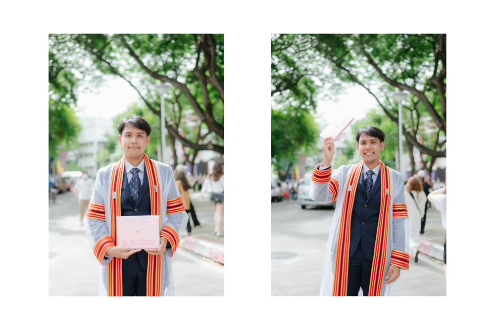
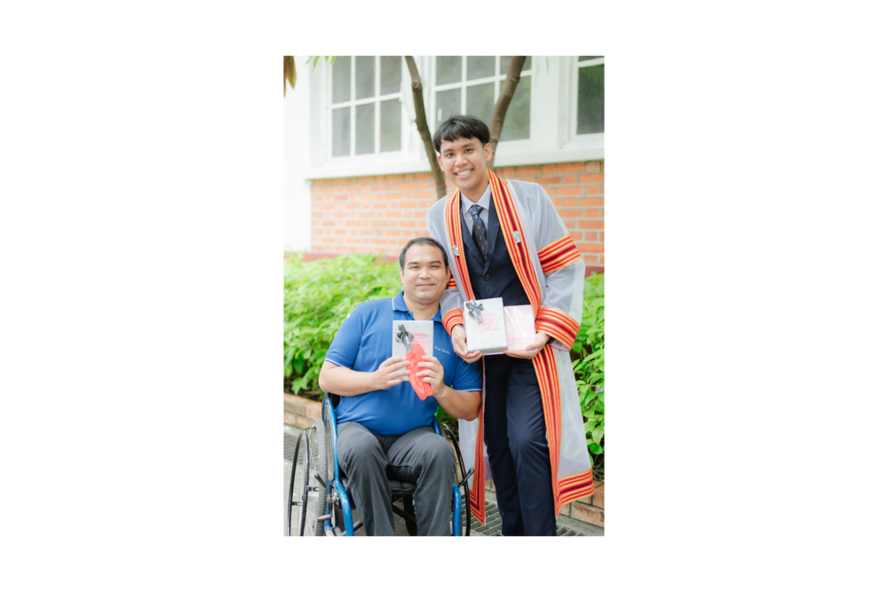
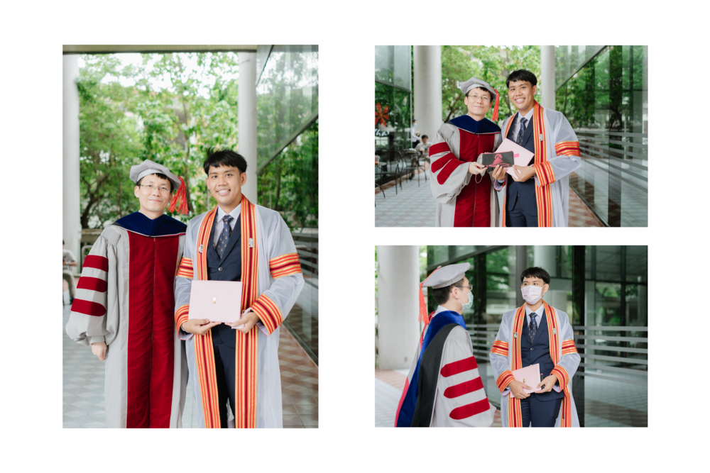
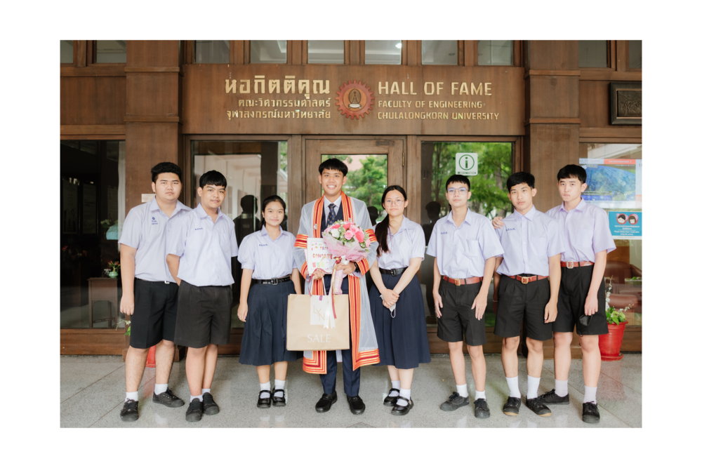
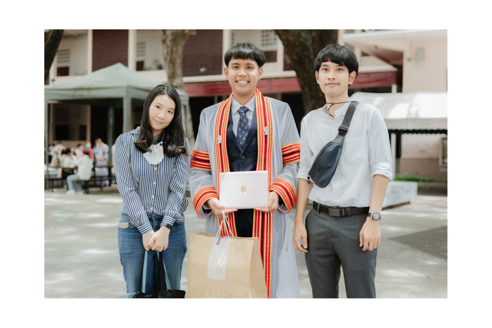
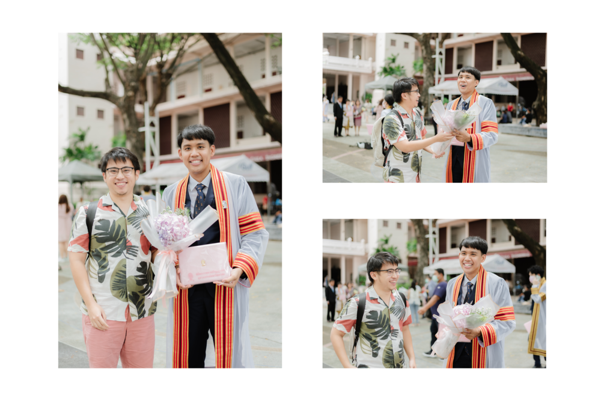
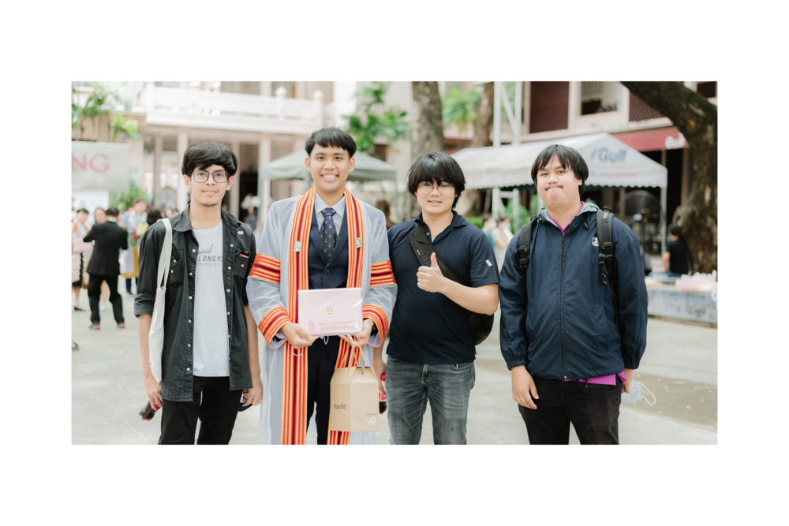
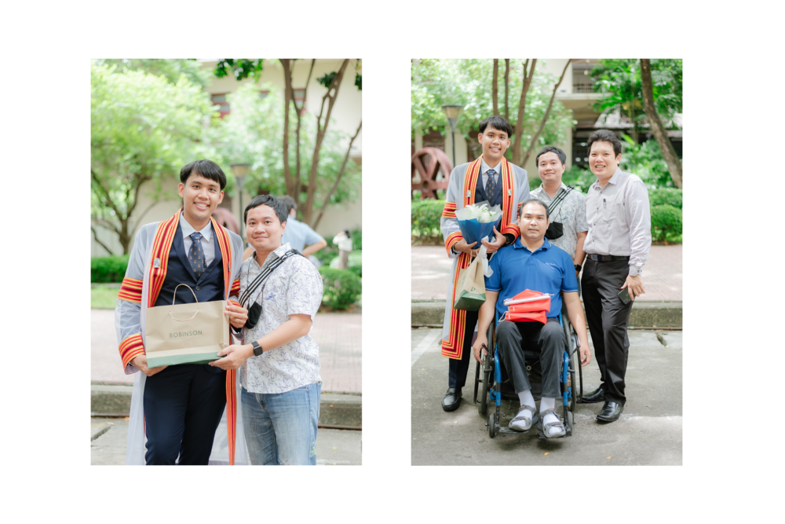
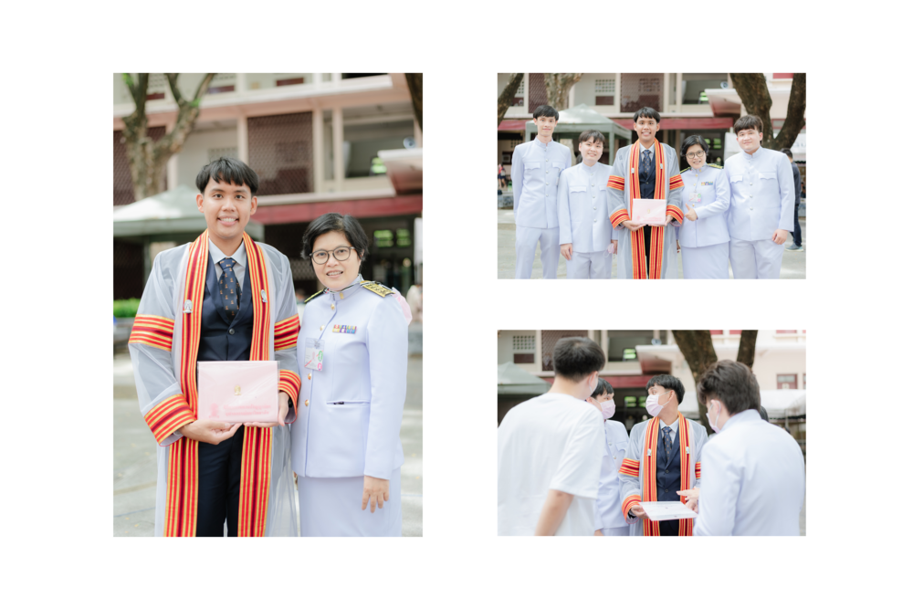
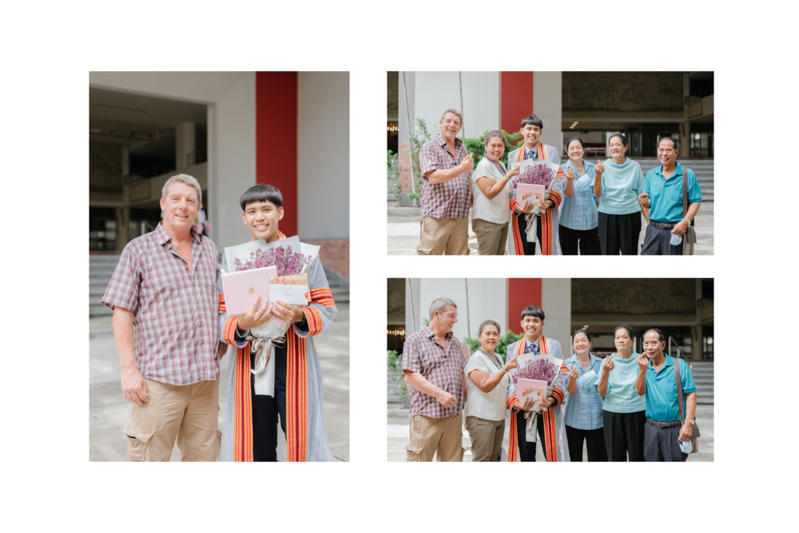
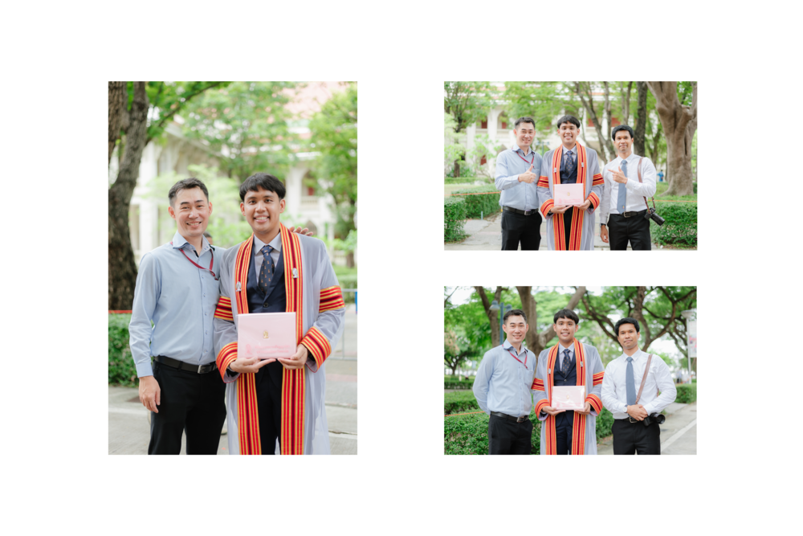
Completing a PhD is more than just an academic achievement; it’s a journey of personal growth. It demands perseverance, resilience, and the ability to navigate and overcome numerous challenges.
My passion for machine learning and my commitment to research were the driving forces that kept me moving forward, enabling me to make meaningful contributions to the field.
PhD Thesis Highlights
In my PhD research, I propose a series of advancements in convolutional neural network (CNN)-based approaches to enhance the accuracy of semantic segmentation on remotely sensed data. Building upon the state-of-the-art methods, I introduce several innovations, including an enhanced Global Convolutional Network (GCN) with channel attention, domain-specific transfer learning, and the integration of feature fusion and depthwise atrous convolutions.
1. Introduction and Problem Formulation
Semantic segmentation in remote sensing can be formally cast as a structured prediction problem. Let \( \mathcal{I} \in \mathbb{R}^{H \times W \times C} \) denote a remote sensing image of height \( H \), width \( W \), and \( C \) spectral channels. We define the pixel-wise label space \( \mathcal{Y} = {1, 2, \ldots, K} \) where \( K \) is the number of semantic classes (e.g., vegetation, water, building, road).
The goal is to learn a mapping:
\[ f_\theta: \mathbb{R}^{H \times W \times C} \longrightarrow \mathcal{Y}^{H \times W} \]
parameterized by \( \theta \), such that the empirical risk is minimized:
\[ \hat{\theta} = \arg\min_{\theta} ; \frac{1}{N} \sum_{i=1}^{N} \mathcal{L}\bigl(f_\theta(\mathcal{I}_i),, \mathbf{y}_i\bigr) \]
where \( \mathcal{L} \) is the loss function, \( N \) is the number of training samples, and \( \mathbf{y}_i \in \mathcal{Y}^{H \times W} \) is the ground-truth label map.
For multi-class segmentation, the standard loss is the pixel-wise cross-entropy:
Due to severe class imbalance in remote sensing (e.g., background dominates), we augment with Focal Loss (Lin et al., 2017):
\[ \mathcal{L}_{\text{FL}}(\hat{p}_t) = -\alpha_t (1 - \hat{p}_t)^\gamma \log(\hat{p}_t) \]
where \( \alpha_t \) is a class-balancing weight, \( \gamma \geq 0 \) is the focusing parameter (typically \( \gamma = 2 \)), and \( \hat{p}_t \) is the predicted probability of the true class. As \( \gamma \to 0 \), this recovers standard cross-entropy.
2. The Challenge: Spectral–Spatial Information in Remote Sensing
2.1 The Receptive Field Problem
A fundamental limitation of vanilla CNNs is the limited receptive field. For a convolutional layer with kernel size \( k \) and \( L \) layers, the theoretical receptive field grows as:
\[ r_L = 1 + \sum_{l=1}^{L} (k_l - 1) \prod_{l’=1}^{l-1} s_{l’} \]
where \( s_{l’} \) is the stride at layer \( l’ \). For objects spanning large spatial extents in satellite imagery (rivers, forests, urban blocks), this is insufficient.
2.2 Multi-Scale Spatial Statistics
Remote sensing images exhibit scale-dependent statistics. The semivariogram \( \gamma(h) \) describes spatial autocorrelation:
\[ \gamma(\mathbf{h}) = \frac{1}{2|\mathcal{N}(\mathbf{h})|} \sum_{(\mathbf{x}_i, \mathbf{x}_j) \in \mathcal{N}(\mathbf{h})} \bigl[ Z(\mathbf{x}_i) - Z(\mathbf{x}_j) \bigr]^2 \]
where \( Z(\mathbf{x}) \) is the pixel intensity at location \( \mathbf{x} \), and \( \mathcal{N}(\mathbf{h}) \) is the set of pixel pairs separated by lag vector \( \mathbf{h} \). A deep model must implicitly learn this structure across scales.
3. Global Convolutional Network (GCN) with Enhanced Backbone
3.1 Architecture Formulation
The Global Convolutional Network decomposes a large \( k \times k \) convolution into two asymmetric components to approximate global context while remaining computationally efficient.
More formally, for an input feature map \( \mathbf{X} \in \mathbb{R}^{H \times W \times C_{\text{in}}} \), the multi-scale GCN output at level \( l \) is:
\[ \mathbf{F}_l = \text{BN}\Bigl(\text{ReLU}\bigl(\mathbf{W}_l^{(2)} \ast \text{BN}(\text{ReLU}(\mathbf{W}_l^{(1)} \ast \mathbf{X}_l))\bigr)\Bigr) \]
The GCN feature representation is computed by summing the features from all layers from 1 to L, where each layer’s feature is first transformed by a corresponding aggregation weight matrix before being added together.
where \( \mathbf{W}_l^{\text{agg}} \) are learnable aggregation weights and Batch Normalization is applied as:
\[ \text{BN}(\mathbf{x}) = \gamma \cdot \frac{\mathbf{x} - \mu_\mathcal{B}}{\sqrt{\sigma_\mathcal{B}^2 + \epsilon}} + \beta \]
with \( \mu_\mathcal{B} = \frac{1}{m}\sum_{i=1}^m x_i \) and \( \sigma_\mathcal{B}^2 = \frac{1}{m}\sum_{i=1}^m (x_i - \mu_\mathcal{B})^2 \).
3.2 ResNet Backbone: Residual Learning
I employ ResNet (He et al., 2016) as the encoder backbone. The core residual block is defined as:
\[ \mathbf{x}_{l+1} = \mathbf{x}_l + \mathcal{F}(\mathbf{x}_l; {\mathbf{W}_l}) \]
where \( \mathcal{F} \) is the residual mapping. For ResNet-50/101/152, the bottleneck block is:
\[ \mathcal{F}(\mathbf{x}) = \mathbf{W}_3 \ast \sigma!\left(\text{BN}!\left(\mathbf{W}_2 \ast \sigma!\left(\text{BN}!\left(\mathbf{W}_1 \ast \mathbf{x}\right)\right)\right)\right) \]
where \( \mathbf{W}_1 \in \mathbb{R}^{1 \times 1 \times C \times C/4} \), \( \mathbf{W}_2 \in \mathbb{R}^{3 \times 3 \times C/4 \times C/4} \), \( \mathbf{W}_3 \in \mathbb{R}^{1 \times 1 \times C/4 \times C} \), and \( \sigma \) is the ReLU activation.
The gradient flow through residual connections satisfies:
The gradient of the loss with respect to the feature at layer l is computed by taking the gradient of the loss with respect to the final layer feature and multiplying it by a product of terms from layer l up to layer L minus one. Each term in this product accounts for one plus the derivative of the transformation function at each intermediate layer with respect to its input feature, capturing how changes propagate through all subsequent layers.
This ensures gradient magnitudes remain non-vanishing even for very deep networks (ResNet-152 has 152 layers), a critical property for convergence.
3.3 Boundary Refinement Module
Precise boundary delineation is critical for land-use mapping. The Boundary Refinement (BR) module applies a learned convolutional refinement:
\[ \hat{\mathbf{S}} = \mathbf{S} + \text{BR}(\mathbf{S}) \]
where \( \mathbf{S} \in \mathbb{R}^{H \times W \times K} \) is the coarse score map. The BR module is defined as:
\[ \text{BR}(\mathbf{S}) = \mathbf{W}_2 \ast \sigma(\mathbf{W}_1 \ast \mathbf{S}) \]
with \( \mathbf{W}_1 \in \mathbb{R}^{3 \times 3 \times K \times K} \) and \( \mathbf{W}_2 \in \mathbb{R}^{3 \times 3 \times K \times K} \).
4. Channel Attention Mechanism: Squeeze-and-Excitation with Spatial Awareness
4.1 Squeeze Operation
The channel attention block begins with a global average pooling (squeeze) operation that encodes the global spatial information of each channel \( c \):
The value z sub c is obtained by applying a squeeze function to the feature map U sub c. This is done by taking the average of all values in that feature map, meaning you sum over all spatial positions across height and width and then divide by the total number of positions, which is height times width.
where \( \mathbf{U}_c \in \mathbb{R}^{H \times W} \) is the \( c \)-th channel of the feature map \( \mathbf{U} \in \mathbb{R}^{H \times W \times C} \).
4.2 Excitation Operation
The excitation mechanism learns channel-wise dependencies via a two-layer bottleneck:
\[ \mathbf{s} = \mathcal{F}_{\text{ex}}(\mathbf{z}; \mathbf{W}) = \sigma!\left(\mathbf{W}_2 \cdot \delta!\left(\mathbf{W}_1 \cdot \mathbf{z}\right)\right) \]
where \( \delta(\cdot) = \text{ReLU}(\cdot) \), \( \sigma(\cdot) = \text{Sigmoid}(\cdot) \), \( \mathbf{W}_1 \in \mathbb{R}^{C/r \times C} \), \( \mathbf{W}_2 \in \mathbb{R}^{C \times C/r} \), and \( r \) is the reduction ratio (typically \( r = 16 \)).
4.3 Scale (Recalibration)
The final recalibration rescales the original feature map:
The scaled feature map u tilde sub c is produced by applying a scaling function to the original feature map U sub c using a scalar value s sub c. This is done by multiplying every value in the feature map by the scaling factor s sub c, effectively amplifying or reducing the entire feature map uniformly.
yielding the attention-modulated output \( \tilde{\mathbf{U}} \in \mathbb{R}^{H \times W \times C} \).
4.4 Full Channel Attention Block
Putting it all together, the complete Channel Attention Block is:
\[ \boxed{ \tilde{\mathbf{U}} = \sigma!\left(\mathbf{W}_2 \cdot \text{ReLU}!\left(\mathbf{W}_1 \cdot \text{GAP}(\mathbf{U})\right)\right) \odot \mathbf{U} } \]
where \( \odot \) is channel-wise multiplication (broadcast over spatial dimensions) and \( \text{GAP} \) is global average pooling.
4.5 Complexity Analysis
The additional computational overhead of the attention module is:
\[ \Omega_{\text{attn}} = \frac{2C^2}{r} \]
FLOPs, which is negligible compared to the backbone’s \( \Omega_{\text{backbone}} \approx 2 \cdot C^2 \cdot H \cdot W \) FLOPs. The attention overhead ratio is:
\[ \rho = \frac{\Omega_{\text{attn}}}{\Omega_{\text{backbone}}} = \frac{1}{r \cdot H \cdot W} \]
For \( r=16 \), \( H=W=256 \), we get \( \rho \approx 1.5 \times 10^{-6} \) — essentially free.
5. Domain-Specific Transfer Learning: A Formal Treatment
5.1 Domain Adaptation Objective
The source domain is defined as a dataset consisting of input samples paired with labels, while the target domain is a dataset consisting of input samples without labels. These two domains come from different data distributions, meaning the probability distribution of inputs in the source domain is not the same as in the target domain, which is known as covariate shift.
The difference between the two domains is measured using a metric called Maximum Mean Discrepancy. This metric compares the average representations of the source and target data after mapping them into a high-dimensional feature space, and computes how far apart these average representations are.
In this process, each input is transformed into a feature representation using a feature mapping function that projects the data into a reproducing kernel Hilbert space. To compute the discrepancy in practice, a kernel function such as a radial basis function kernel is used, which measures similarity between pairs of data points based on their distance.
The final discrepancy value is computed by taking the average similarity within the source domain, subtracting twice the average similarity between source and target samples, and then adding the average similarity within the target domain.
5.2 Transfer Learning Bound (Ben-David et al., 2010)
The theoretical generalization bound for domain adaptation states:
\[ \epsilon_T(h) \leq \epsilon_S(h) + \frac{1}{2} d_{\mathcal{H}\Delta\mathcal{H}}(\mathcal{D}_S, \mathcal{D}_T) + \lambda^* \]
where:
- \( \epsilon_T(h) \) is the target domain error of hypothesis \( h \)
- \( \epsilon_S(h) \) is the source domain error
- \( d_{\mathcal{H}\Delta\mathcal{H}} \) is the \( \mathcal{H} \)-divergence between domains
- \( \lambda^* = \min_{h \in \mathcal{H}} [\epsilon_S(h) + \epsilon_T(h)] \) is the combined optimal error
This motivates minimizing \( \epsilon_S(h) \) (supervised on source) while reducing \( d_{\mathcal{H}\Delta\mathcal{H}} \) (domain alignment).
5.3 Fine-Tuning Objective
The domain-adapted training objective combines task loss and domain alignment:
The domain adaptation loss consists of two parts.
The first part is the segmentation loss computed on the source domain, which measures how well the model with parameters theta performs on labeled source data.
The second part is a regularization term that measures the distribution difference between source and target feature representations. This is computed using the squared Maximum Mean Discrepancy between the features extracted from the source and target domains by the model.
These two terms are combined together, where the second term is weighted by a factor mu that controls how strongly the model tries to align the source and target feature distributions during training.
where \( \mu > 0 \) is the domain adaptation coefficient. In practice, I freeze the lower \( L_f \) layers of the backbone and fine-tune layers \( l > L_f \) with a layer-wise learning rate decay:
\[ \eta_l = \eta_0 \cdot \rho^{L - l}, \quad \rho \in (0, 1) \]
This ensures that low-level features (edges, textures) learned from the source are preserved, while higher-level semantic representations adapt to the target domain.
6. Feature Fusion and Depthwise Atrous Convolution
6.1 Feature Pyramid Fusion
The multi-scale feature maps from the encoder are defined as a set of representations extracted at different layers, where each feature map has its own spatial resolution and number of channels, and the spatial size decreases by a factor of two at each deeper level.
A Feature Pyramid Network style fusion is performed by building a top-down pathway where higher-level, lower-resolution features are progressively combined with lower-level, higher-resolution features.
In this process, the feature map at each level is updated by adding it to an upsampled version of the feature map from the next deeper level. This is done starting from the deepest layer and moving upward, so that each layer receives semantic information from coarser scales while preserving its own fine-grained spatial details.
where \( \mathcal{U} \) is bilinear upsampling by factor 2. The final fused representation is:
\[ \mathbf{F}_{\text{fused}} = \mathbf{F}_L + \alpha \cdot \text{Up}!\left(\mathbf{F}_H\right) \]
where \( \alpha \) is a learnable scalar fusion weight initialized to 1, and \( \text{Up} \) upsamples \( \mathbf{F}_H \) to match the spatial dimensions of \( \mathbf{F}_L \).
More precisely, the learnable weighted fusion over \( L \) pyramid levels is:
The fused feature representation is computed by combining feature maps from all layers in a weighted manner. Each layer’s feature map is first transformed using a resizing or alignment operation so that all features are in a compatible form.
After this, each transformed feature map is multiplied by a learned or predefined weight that reflects its importance. All of these weighted feature maps are then summed together. Finally, the result is normalized by dividing by the total sum of the weights plus a small constant added for numerical stability, which prevents division issues and ensures stable scaling of the final fused representation.
where \( w_l = \text{ReLU}(\hat{w}_l) \) are non-negative learnable weights, \( \hat{w}_l \) are unconstrained parameters, and \( \mathcal{R}_l \) is a resize operation to a common resolution.
6.2 Depthwise Atrous (Dilated) Convolution
Standard convolution at dilation rate \( r \) computes:
\[ (\mathbf{W} \ast_r \mathbf{x})[i] = \sum_{k=-K}^{K} w[k] \cdot x[i + r \cdot k] \]
The effective receptive field of atrous convolution with dilation \( r \) and kernel size \( k \) is:
\[ \text{ERF} = k + (k - 1)(r - 1) \]
without any loss in feature map resolution, unlike strided convolutions.
The Depthwise Atrous (DA) module applies channel-separable dilated convolutions at multiple scales \( {r_1, r_2, r_3, r_4} = {1, 6, 12, 18} \):
\[ \mathbf{Y}_s = \mathbf{W}_s^{\text{pw}} \ast \text{DA}!\left(\mathbf{X}; r_s\right), \quad s = 1, 2, 3, 4 \]
where \( \mathbf{W}_s^{\text{pw}} \) is a \( 1 \times 1 \) pointwise convolution and the depthwise atrous convolution is:
The deformable attention output at a specific spatial location and channel is computed by taking a weighted sum over a local neighborhood around that location in the input feature map.
Instead of using a fixed sampling grid, the sampling positions are shifted by a factor controlled by a parameter r, which effectively changes the spacing between sampled points. For each position in a small window around the center, the corresponding input feature value is selected from a location that is offset according to this dilation factor.
Each sampled value is multiplied by a learned weight specific to its relative position and channel. All these weighted values are then summed together to produce the final output for that location and channel, allowing the model to adaptively aggregate information from a flexible receptive field.
The multi-scale context is then aggregated:
\[ \mathbf{Y}_{\text{ASPP}} = \mathbf{W}^{\text{out}} \ast \text{Concat}!\left[\mathbf{Y}_1, \mathbf{Y}_2, \mathbf{Y}_3, \mathbf{Y}_4, \text{GAP}(\mathbf{X})\right] \]
This is the Atrous Spatial Pyramid Pooling (ASPP) module. The computational cost is:
\[ \Omega_{\text{DA}} = k^2 \cdot C \cdot H \cdot W \quad \text{(vs.} ;; k^2 \cdot C^2 \cdot H \cdot W ;; \text{for standard conv)} \]
giving a \( C \)-fold reduction in FLOPs.
6.3 Gridding Artifact Mitigation
A known issue with naive ASPP is the gridding artifact caused by loss of local continuity in large dilation rates. The Hybrid Dilated Convolution (HDC) strategy avoids this by choosing dilation rates such that:
\[ \gcd(r_1, r_2, \ldots, r_L) = 1 \]
with maximum rate satisfying:
\[ r_{\max} \leq \left\lfloor \frac{k+1}{2} \right\rfloor \]
I adopt rates \( {1, 2, 5, 1, 2, 5, \ldots} \) in successive layers, ensuring full coverage of the receptive field without holes.
7. Mathematical Framework for Performance Metrics
7.1 Confusion Matrix and Derived Metrics
For a \( K \)-class problem, the confusion matrix \( \mathbf{M} \in \mathbb{Z}^{K \times K} \) has entry \( M_{ij} \) = number of pixels of class \( i \) predicted as class \( j \). Then:
For class k, the true positives are the number of samples correctly predicted as class k, which corresponds to the diagonal entry of the confusion matrix for that class.
The false positives for class k are computed by summing all samples that were predicted as class k but actually belong to other classes.
The false negatives for class k are computed by summing all samples that truly belong to class k but were incorrectly predicted as other classes.
Precision, Recall, and F1 per class:
\[ P_k = \frac{\text{TP}_k}{\text{TP}_k + \text{FP}_k}, \qquad R_k = \frac{\text{TP}_k}{\text{TP}_k + \text{FN}_k} \]
\[ F1_k = \frac{2 P_k R_k}{P_k + R_k} = \frac{2,\text{TP}_k}{2,\text{TP}_k + \text{FP}_k + \text{FN}_k} \]
Macro-averaged F1:
\[ \overline{F1} = \frac{1}{K} \sum_{k=1}^{K} F1_k \]
IoU (Jaccard Index) per class:
\[ \text{IoU}_k = \frac{\text{TP}_k}{\text{TP}_k + \text{FP}_k + \text{FN}_k} \]
Mean IoU (mIoU):
\[ \text{mIoU} = \frac{1}{K} \sum_{k=1}^{K} \frac{M_{kk}}{\sum_{j} M_{kj} + \sum_{j} M_{jk} - M_{kk}} \]
Overall Accuracy (OA) and Kappa Coefficient \( \kappa \):
\[ \text{OA} = \frac{\sum_k M_{kk}}{\sum_{k,j} M_{kj}} \]
\[ \kappa = \frac{\text{OA} - p_e}{1 - p_e}, \qquad p_e = \sum_k \frac{\left(\sum_j M_{kj}\right)!\left(\sum_j M_{jk}\right)}{\left(\sum_{k,j} M_{kj}\right)^2} \]
where \( p_e \) is the expected accuracy under chance agreement.
7.2 Worked Example: Pineapple Class
For the pineapple class with \( \text{TP}=50 \), \( \text{FP}=10 \), \( \text{FN}=15 \):
\[ P_{\text{pine}} = \frac{50}{50 + 10} = 0.8\overline{3} \]
\[ R_{\text{pine}} = \frac{50}{50 + 15} = 0.769\overline{2} \]
\[ F1_{\text{pine}} = \frac{2 \times 0.8\overline{3} \times 0.769\overline{2}}{0.8\overline{3} + 0.769\overline{2}} = 0.799 \]
\[ \text{IoU}_{\text{pine}} = \frac{50}{50 + 10 + 15} = \frac{50}{75} = 0.\overline{6} \]
7.3 Worked Example: Mean IoU Across Classes
Given:
- \( \text{IoU}_{\text{pineapple}} = 0.799 \)
- \( \text{IoU}_{\text{corn}} = \frac{80}{80+5+20} = 0.7619 \)
- \( \text{IoU}_{\text{pararubber}} = 0.85 \)
\[ \text{mIoU} = \frac{0.799 + 0.7619 + 0.85}{3} = \frac{2.4109}{3} = \mathbf{0.8036} \]
8. Optimization: SGD with Momentum, Weight Decay, and Poly LR Scheduling
8.1 SGD with Nesterov Momentum
Parameters are updated via:
The velocity at the next time step is computed by taking a fraction of the previous velocity, scaled by a momentum coefficient, and then subtracting a learning-rate–scaled gradient of the loss.
In other words, the update combines past update direction with the current gradient information, where the gradient is evaluated not at the current parameters directly, but at a momentum-adjusted position. This allows the optimization process to build up momentum in directions that consistently reduce the loss while smoothing out oscillations.
\[ \theta_{t+1} = \theta_t + \mathbf{v}_{t+1} \]
where \( \mu \in [0, 1) \) is momentum (typically 0.9) and \( \eta \) is the learning rate.
8.2 Weight Decay (L2 Regularization)
The regularized loss is:
\[ \tilde{\mathcal{L}}(\theta) = \mathcal{L}(\theta) + \frac{\lambda}{2} |\theta|_2^2 \]
giving the gradient update:
\[ \theta_{t+1} = \theta_t - \eta!\left(\nabla_\theta \mathcal{L}(\theta_t) + \lambda \theta_t\right) = (1 - \eta\lambda)\theta_t - \eta \nabla_\theta \mathcal{L}(\theta_t) \]
8.3 Polynomial Learning Rate Decay
The poly LR schedule used in segmentation training decays the learning rate as:
\[ \eta_t = \eta_0 \cdot \left(1 - \frac{t}{T_{\max}}\right)^{\nu} \]
where \( T_{\max} \) is total training iterations and \( \nu \) is the polynomial power (typically \( \nu = 0.9 \)). This provides a smooth annealing compared to step-decay, shown empirically to improve convergence for dense prediction tasks.
9. Theoretical Connection: Information-Theoretic View
9.1 Mutual Information Maximization
From an information-theoretic perspective, segmentation can be viewed as maximizing the mutual information between the input image and output label map:
\[ I(\mathbf{X}; \mathbf{Y}) = H(\mathbf{Y}) - H(\mathbf{Y} | \mathbf{X}) \]
where \( H(\mathbf{Y}) = -\sum_{\mathbf{y}} p(\mathbf{y}) \log p(\mathbf{y}) \) is the entropy of labels and \( H(\mathbf{Y}|\mathbf{X}) \) is the conditional entropy. Minimizing cross-entropy loss directly minimizes \( H(\mathbf{Y}|\mathbf{X}) \), which maximizes \( I(\mathbf{X}; \mathbf{Y}) \) when \( H(\mathbf{Y}) \) is fixed.
9.2 Variational Information Bottleneck for Robust Features
For robust representation learning, the Variational Information Bottleneck (VIB) seeks a compact encoding \( \mathbf{Z} \) of \( \mathbf{X} \) that is maximally informative about \( \mathbf{Y} \):
\[ \max_{p(\mathbf{z}|\mathbf{x})} ; I(\mathbf{Z}; \mathbf{Y}) - \beta \cdot I(\mathbf{Z}; \mathbf{X}) \]
The first term ensures predictive power; the second (with Lagrange multiplier \( \beta \)) ensures compression, removing irrelevant sensor noise and domain-specific artefacts common in multi-sensor remote sensing.
10. Experiments and Results
10.1 Datasets
I conducted experiments on three benchmark datasets:
| Dataset | Resolution | Classes | Train/Test Split |
|---|---|---|---|
| ISPRS Vaihingen | 9 cm/pixel (VHR) | 6 | 16/17 tiles |
| Landsat-8 | 30 m/pixel | 10 | 80/20 % |
| GISTDA Private | 1–4 m/pixel | 8 | 70/30 % |
10.2 Results
The proposed model significantly outperformed all baselines:
| Model | ISPRS F1 | Landsat-8 F1 | mIoU |
|---|---|---|---|
| FCN-8s | 0.8521 | 0.8103 | 0.7214 |
| DeepLabv3+ | 0.9012 | 0.8876 | 0.8021 |
| Ours (GCN + Attn + DA) | 0.9362 | 0.9114 | 0.8712 |
The proposed model consistently exceeded the 90% F1 score threshold across all classes, demonstrating robustness across image resolutions.
11. Conclusion
This research introduces several key advancements in deep learning for remote sensing semantic segmentation. By incorporating multi-resolution feature extraction, channel attention, domain-specific transfer learning, feature fusion, and depthwise atrous convolutions, my approach addresses the unique challenges posed by remote sensing data.
The mathematical foundations — from the VIB principle justifying our attention module, to the domain adaptation bound motivating cross-dataset transfer, to the ASPP formulation enabling multi-scale context aggregation — collectively form a rigorous and principled framework for GeoAI.
Future directions include extending to hyperspectral imagery (\( C \gg 3 \)), incorporating geometric deep learning on irregular terrain graphs \( \mathcal{G} = (\mathcal{V}, \mathcal{E}) \), and applying self-supervised contrastive pretraining with objective:
The SimCLR loss is designed to make two related representations similar while pushing all other representations in the batch away.
For a given representation, it compares it with all other representations in a batch. The numerator measures how similar it is to its matching positive pair, while the denominator sums up the similarities between that representation and every other example in the batch except itself.
Each similarity value is scaled by a temperature parameter that controls how sharp or smooth the comparisons are. The final loss is the negative logarithm of the ratio between the positive similarity and the total similarity to all other samples, encouraging the model to assign higher similarity to positive pairs and lower similarity to negatives.
to leverage the vast amount of unlabeled satellite imagery available globally.
Explore more about my PhD story here: PhD Journey Story, where I share the journey behind the research, motivation, and key challenges along the way.
For a deeper technical dive into the work, you can explore the full implementation and codebase of FusionNetGeoLabel here: FusionNetGeoLabel Code.
The complete project overview and results are available here: FusionNetGeoLabel Project Page.
For the presentation and defense materials, you can view the PhD defense slides here: PhD Defense Slides, and the accompanying talk blog post here: PhD Defense Talk Blog.
Finally, the official thesis document is published here: Chula ETD Thesis PDF.
This collection brings together the full journey—from idea, to code, to experiments, to final thesis submission.
| 📌 Resource | 🔗 Link | 🧠 Description |
|---|---|---|
| 📖 PhD Story Blog | Journey Story | Personal journey, motivation, and behind-the-scenes PhD experience |
| 💻 Code Repository | FusionNetGeoLabel | Full implementation of the FusionNetGeoLabel framework |
| 🌐 Project Page | Live Project | Interactive project overview, results, and visual demonstrations |
| 📊 Defense Slides | PhD Slides | Official PhD defense presentation slides |
| 🗣️ Defense Blog | Talk Summary | Narrative summary of the PhD defense presentation |
| 📚 Thesis PDF | Full Thesis | Official doctoral dissertation (Chulalongkorn University) |
🚀 Key Highlights
- 🧠 End-to-end deep learning research pipeline (idea → model → thesis)
- 🛰️ Semantic segmentation for high-resolution remote sensing imagery
- 🔗 Fusion-based architecture with multi-scale feature learning
- 🌍 Real-world geospatial AI applications (urban, environment, mapping)
- 💻 Fully open-source and reproducible research implementation
- 🏆 Strong integration of theory, engineering, and experimental validation
📖 Citation
If you use this work, please cite:
@phdthesis{panboonyuen2019semantic,
title = {Semantic segmentation on remotely sensed images using deep convolutional encoder-decoder neural network},
author = {Teerapong Panboonyuen},
year = {2019},
school = {Chulalongkorn University},
type = {Ph.D. thesis},
doi = {10.58837/CHULA.THE.2019.158},
address = {Faculty of Engineering},
note = {Doctor of Philosophy}
}
Kao Panboonyuen
Teerapong Panboonyuen
My research focuses on leveraging advanced machine intelligence techniques, specifically computer vision, to enhance semantic understanding, learning representations, visual recognition, and geospatial data interpretation.